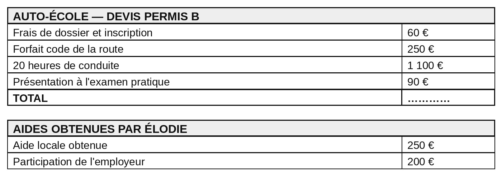
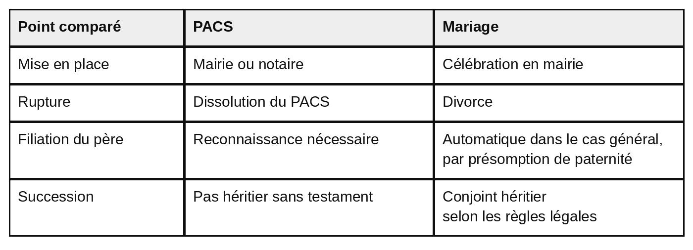
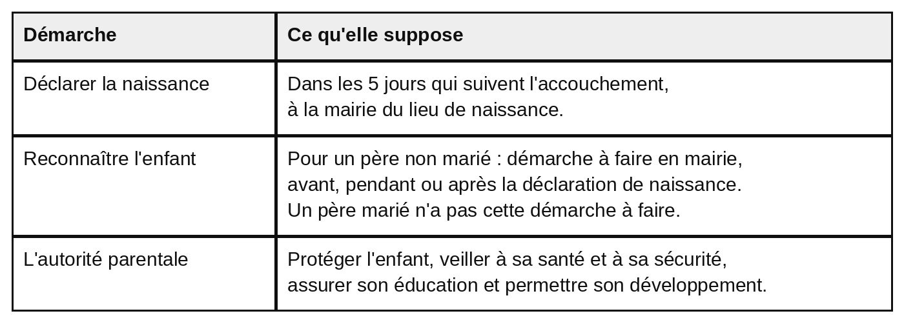

Réglages d’affichage
Les formalités de la vie familiale et civile
CAPa 2e année — Sciences économiques, sociales et de gestion — capacité CG1.2
Savoir où accomplir les formalités essentielles, calculer un reste à charge et distinguer les effets du PACS et du mariage.
Les acquis de ce chapitre
- Relever où demander un document administratif et ce qu'il coûte.
- Calculer le coût total d'un permis et le reste à charge après aides.
- Distinguer les effets du PACS et ceux du mariage.
- Énoncer les démarches obligatoires à la naissance d'un enfant.
Séance 1
Mes documents administratifs
Objectif : Relever où demander un document administratif, ce qu'il coûte et combien de temps il est valable.
La situation
Élodie vient d'être embauchée dans une entreprise d'espaces verts. Elle a déménagé le mois dernier.
Sa carte d'identité est périmée depuis six mois. L'entreprise lui demande aussi un acte de naissance pour compléter son dossier.
Élodie ne sait pas où s'adresser, ni ce que cela va lui coûter.
DOC. 1 — Où les demander, combien ça coûte
![Tableau à quatre colonnes : document, où le demander, coût, durée de validité. Carte d'identité en renouvellement : mairie équipée d'une station, gratuit avec l'ancienne carte, valable 10 ans. Carte d'identité en cas de perte ou de vol : mairie équipée d'une station, 25 euros en timbre fiscal, valable 10 ans. Passeport pour un majeur : mairie équipée d'une station, 86 euros en timbre fiscal, valable 10 ans. Acte de naissance : mairie du lieu de naissance, gratuit, pas de durée générale. Sous le tableau : un acte de naissance n'a pas de durée de validité générale ; certaines démarches exigent un acte récent, notamment de moins de 3 mois, pour la carte d'identité, le passeport, le mariage et le PACS.](images/doc1_documents_identite.jpg)
Description écrite du document
Tableau à quatre colonnes : document, où le demander, coût, durée de validité. Carte d'identité en renouvellement : mairie équipée d'une station, gratuit avec l'ancienne carte, valable 10 ans. Carte d'identité en cas de perte ou de vol : mairie équipée d'une station, 25 euros en timbre fiscal, valable 10 ans. Passeport pour un majeur : mairie équipée d'une station, 86 euros en timbre fiscal, valable 10 ans. Acte de naissance : mairie du lieu de naissance, gratuit, pas de durée générale. Sous le tableau : un acte de naissance n'a pas de durée de validité générale ; certaines démarches exigent un acte récent, notamment de moins de 3 mois, pour la carte d'identité, le passeport, le mariage et le PACS.
Sources : service-public.gouv.fr, pages « Renouvellement de la carte d'identité d'un majeur », « Durée de validité d'une carte d'identité » et « Renouvellement du passeport d'un majeur », consultées en août 2026.
1. À partir du document 1 :
Un indice
La colonne « Coût » du tableau donne les deux montants.
Le corrigé
- Renouvellement de la carte d'identité : gratuit.
- Passeport : 86 €.
Explication
La démarche
Lire la colonne « Coût » du tableau, ligne par ligne.
L’erreur fréquente
Écrire 25 € pour le renouvellement. Ce montant correspond à la ligne « perte ou vol », pas au renouvellement.
Un indice
Comparer les deux premières lignes du tableau : elles portent sur le même document.
Le corrigé
- Le renouvellement est gratuit lorsque l'ancienne carte est présentée. En cas de perte ou de vol, l'ancienne carte ne peut pas être présentée : un timbre fiscal de 25 € est alors demandé.
Explication
La démarche
Comparer les deux premières lignes du tableau et repérer ce qui les distingue.
L’erreur fréquente
Croire que la gratuité dépend de l'âge ou de la commune. Elle dépend d'une seule condition : pouvoir présenter l'ancienne carte.
Un indice
La colonne « Où le demander » précise quelle mairie détient l'acte.
Le corrigé
- Un acte de naissance se demande à la mairie du lieu de naissance, qui détient le registre. La mairie de la commune où Élodie habite aujourd'hui ne dispose pas de cet acte.
Explication
La démarche
Lire la colonne « Où le demander » pour la ligne « acte de naissance », puis dire pourquoi.
L’erreur fréquente
Répondre « parce qu'elle a déménagé ». Le déménagement n'y change rien : l'acte est toujours détenu par la mairie du lieu de naissance.
Le lexique de la séance 1
- Timbre fiscal
- Paiement électronique exigé pour certaines démarches administratives.
- Acte de naissance
- Document d'état civil délivré par la mairie du lieu de naissance.
- Durée de validité
- Période pendant laquelle un document reste utilisable.
Auto-évaluation de la séance 1
1. Le renouvellement d'une carte d'identité est gratuit lorsque l'ancienne carte est présentée. Répondre en cochant une case.
Le corrigé. Vrai
Explication. En cas de perte ou de vol, un timbre fiscal de 25 € est demandé.
2. Indiquer où demander un acte de naissance, en cochant une seule case.
Le corrigé. À la mairie du lieu de naissance
Explication. C'est elle qui détient le registre.
3. Indiquer le coût d'un passeport pour une personne majeure. Répondre en rédigeant une phrase.
Le corrigé. 86 €, réglés en timbre fiscal.
Explication. Il est valable 10 ans.
Score : —
Séance 2
Financer son permis
Objectif : Calculer le coût total d'un permis, le reste à charge après aides, et repérer où chercher une aide.
La situation
Le permis de conduire est indispensable à Élodie pour se rendre sur les chantiers.
Elle a demandé un devis à une auto-école. Elle a également obtenu deux aides.
DOC. 2 — Le devis d'Élodie

Description écrite du document
Un devis d'auto-école pour un permis B. Frais de dossier et inscription : 60 euros. Forfait code de la route : 250 euros. Vingt heures de conduite : 1 100 euros. Présentation à l'examen pratique : 90 euros. La ligne du total est laissée à compléter. En dessous, un encadré indique les aides obtenues par Élodie : une aide locale de 250 euros et une participation de l'employeur de 200 euros.
Document fictif construit pour l'exercice. Les montants des aides ne correspondent à aucun dispositif réel.
1. À partir du document 2 :
Un indice
Additionner les quatre lignes du devis.
Le corrigé
- 60 + 250 + 1 100 + 90 = 1 500.
- Le coût total du permis est de 1 500 €.
Explication
La démarche
Additionner les quatre montants du devis.
L’erreur fréquente
Oublier une ligne du devis. Les quatre lignes doivent être additionnées.
900 − 300 = 600.
Le reste à charge est de 600 €.
Un indice
Retirer les deux aides du total calculé à la question précédente.
Le corrigé
- 250 + 200 = 450 d'aides.
- 1 500 − 450 = 1 050.
- Le reste à charge d'Élodie est de 1 050 €.
Explication
La démarche
Additionner d'abord les deux aides, puis les retirer du coût total.
L’erreur fréquente
Ne retirer qu'une seule aide. Les deux aides ont été obtenues et se cumulent.
DOC. 3 — Où chercher une aide au permis
Plusieurs dispositifs existent pour financer un permis, mais ils changent souvent et varient selon le statut de la personne et le territoire où elle habite.
Trois interlocuteurs auprès desquels se renseigner : la mission locale · la région ou le département · l'employeur ou le centre de formation.
Le service 1jeune1permis permet d'identifier les aides financières disponibles. Ce n'est pas un organisme qui verse une aide : c'est un outil de recherche.
Source : service-public.gouv.fr, page « L'aide au permis de conduire pour les apprentis est supprimée », consultée en août 2026.
2. À partir du document 3 :
Un indice
Le deuxième et le troisième paragraphe du document 3 les nomment.
Le corrigé
- Trois réponses parmi : la mission locale ; la région ou le département ; l'employeur ou le centre de formation ; le service 1jeune1permis.
Explication
La démarche
Relever les interlocuteurs nommés dans le document 3.
L’erreur fréquente
Citer un montant d'aide. La question porte sur les endroits où se renseigner, pas sur les sommes.
Le lexique de la séance 2
- Devis
- Document qui détaille le prix de chaque prestation avant l'achat.
- Reste à charge
- Somme qui reste à payer une fois les aides déduites.
- Mission locale
- Structure qui accompagne les jeunes dans leur insertion professionnelle.
Auto-évaluation de la séance 2
1. Le reste à charge est la somme qui reste à payer une fois les aides déduites. Répondre en cochant une case.
Le corrigé. Vrai
Explication. C'est ce que la personne paie réellement.
2. Indiquer ce qu'est le service 1jeune1permis, en cochant une seule case.
Le corrigé. Un outil pour identifier les aides disponibles
Explication. C'est ce que précise le document 3.
3. Indiquer un interlocuteur auprès duquel se renseigner pour financer un permis. Répondre en rédigeant une phrase.
Le corrigé. La mission locale, la région, le département, ou l'employeur.
Explication. Le document 3 en donne trois.
Score : —
Séance 3
Vivre en couple et devenir parent
Objectif : Distinguer les effets du PACS et ceux du mariage, et énoncer les démarches obligatoires à la naissance.
La situation
Camille et Anthony vivent ensemble depuis trois ans. Ils attendent un enfant pour le mois de mars.
Ils envisagent de se pacser ou de se marier, sans savoir ce qui change entre les deux.
Un collègue leur a dit : « Le PACS, c'est pareil mais plus simple. »
DOC. 4 — PACS et mariage : ce qui diffère

Description écrite du document
Tableau comparant le PACS et le mariage sur quatre points. Mise en place : pour le PACS, mairie ou notaire ; pour le mariage, célébration en mairie. Rupture : pour le PACS, dissolution du PACS ; pour le mariage, divorce. Filiation du père : pour le PACS, reconnaissance nécessaire ; pour le mariage, automatique dans le cas général, par présomption de paternité. Succession : pour le PACS, pas héritier sans testament ; pour le mariage, conjoint héritier selon les règles légales.
Sources : service-public.gouv.fr, pages relatives au PACS, au mariage et à la filiation, consultées en août 2026.
DOC. 5 — À la naissance : ce qui est obligatoire

Description écrite du document
Tableau à deux colonnes : démarche et ce qu'elle suppose. Déclarer la naissance : dans les 5 jours qui suivent l'accouchement, à la mairie du lieu de naissance. Reconnaître l'enfant : pour un père non marié, démarche à faire en mairie, avant, pendant ou après la déclaration de naissance ; un père marié n'a pas cette démarche à faire. L'autorité parentale : protéger l'enfant, veiller à sa santé et à sa sécurité, assurer son éducation et permettre son développement.
Sources : service-public.gouv.fr, pages relatives à la déclaration de naissance, à la reconnaissance d'un enfant et à l'autorité parentale, consultées en août 2026.
1. À partir des documents 4 et 5 :
Un indice
La première ligne du document 5 donne les deux informations.
Le corrigé
- Délai : dans les 5 jours qui suivent l'accouchement.
- Lieu : la mairie du lieu de naissance.
Explication
La démarche
Lire la première ligne du document 5 et relever les deux éléments demandés.
L’erreur fréquente
Confondre avec la reconnaissance, qui peut se faire dans n'importe quelle mairie et sans délai.
Un indice
Le document 4 compare les deux sur quatre points.
Le corrigé
- Deux différences parmi : la mise en place, en mairie ou chez un notaire pour le PACS, par une célébration en mairie pour le mariage ; la rupture, dissolution du PACS ou divorce ; la filiation du père, reconnaissance nécessaire pour un couple pacsé, automatique dans le cas général pour un couple marié ; la succession, pas héritier sans testament pour un partenaire pacsé, conjoint héritier selon les règles légales pour un époux.
Explication
La démarche
Choisir deux lignes du tableau et écrire, pour chacune, ce qui change entre les deux colonnes.
L’erreur fréquente
Écrire seulement le nom du point comparé, comme « la succession », sans dire ce qui change.
Un indice
La ligne « filiation du père » du document 4 et la deuxième ligne du document 5 se complètent.
Le corrigé
- Anthony n'est pas marié avec Camille. Pour établir sa filiation avec l'enfant, il doit le reconnaître en mairie. Dans un couple marié, la filiation du père est automatique dans le cas général : cette démarche n'est pas nécessaire.
Explication
La démarche
Partir de la situation d'Anthony, non marié, puis dire ce que le document impose dans ce cas.
L’erreur fréquente
Répondre « pour que l'enfant porte son nom ». Le document parle d'établir la filiation, qui est le lien juridique entre le père et l'enfant.
Un indice
Les quatre lignes du document 4 sont autant d'éléments à comparer.
Le corrigé
- Deux éléments parmi : la façon de mettre fin à l'union ; la filiation du père ; la succession en cas de décès ; les modalités de mise en place.
Explication
La démarche
Reprendre les points comparés du document 4 et en choisir deux.
L’erreur fréquente
Indiquer lequel des deux il faudrait choisir. La question porte sur les éléments à comparer, pas sur le choix à faire.
Le lexique de la séance 3
- PACS
- Pacte civil de solidarité : contrat conclu entre deux personnes pour organiser leur vie commune.
- Filiation
- Lien juridique entre un enfant et ses parents.
- Reconnaissance
- Démarche par laquelle un père non marié établit sa filiation avec son enfant.
- Autorité parentale
- Ensemble des devoirs des parents envers leur enfant.
Auto-évaluation de la séance 3
1. Un partenaire pacsé hérite automatiquement de son partenaire décédé. Répondre en cochant une case.
Le corrigé. Faux
Explication. Sans testament, un partenaire pacsé n'est pas héritier.
2. Indiquer le délai de la déclaration de naissance, en cochant une seule case.
Le corrigé. 5 jours
Explication. Le délai court à partir du jour de l'accouchement.
3. Indiquer quel père doit reconnaître son enfant. Répondre en rédigeant une phrase.
Le corrigé. Le père non marié.
Explication. Pour un père marié, la filiation est automatique dans le cas général.
Score : —